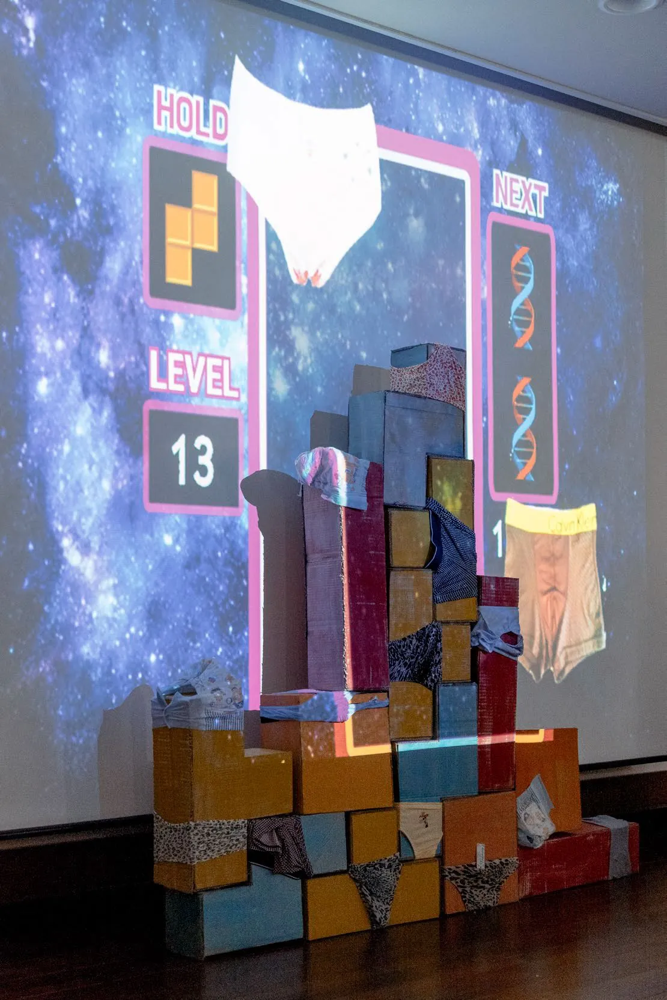
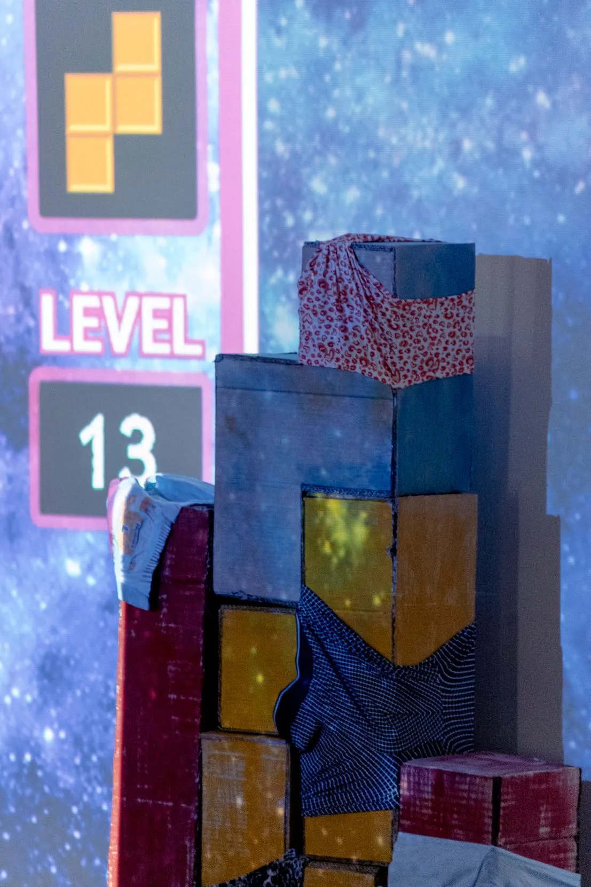

Surviving Blocks
Mixed-media installation, 2017
- Shown at
- Artience 30×30, Daejeon Culture and Arts Foundation × KAIST Graduate School of Culture Technology × British Council, Daejeon, 2017
- Materials
- Projection mapping, cardboard boxes, paint, undergarments, PC, variable dimensions
- In collaboration with
- Dr. Lee Hyun-ji (biotechnologist)

Surviving Blocks reflects on age, time and DNA, unfolding through projection mapping how our genetic code interacts and evolves. The installation was developed in collaboration with biotechnologist Dr. Lee Hyun-ji.
Cardboard boxes, paint and many pairs of undergarments are stacked into a single structure. Undergarments are an intimate medium that absorbs the most direct traces of human DNA. The original plan was to collect used garments to hold a genuine biological presence; time and logistics led to newly sourced ones instead.
Projection mapping turns these everyday objects into a canvas for living digital light.
Exhibited in Artience 30×30, co-hosted by KAIST Graduate School of Culture Technology, the British Council and Daejeon Culture and Arts Foundation.
